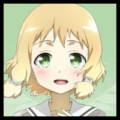

キャラクター紹介

プレイヤー名：結城十代
キャラクター名：犬吠埼樹
元ネタ：結城友奈は勇者である 犬吠埼樹(＋遊戯王M☆M設定)
キャラクター紹介：
TTCGに参加した友奈・夏凜・園子と同じく勇者部所属。元勇者。
友奈たちが持っていたTTOCGのチラシに興味を示し、新部長として自分をより良くするためという建前で参加。
大人しく気弱な性格だが、ここぞという時はかなりメンタルが強い。
歌う事が好きで、夢は歌手。そのためブルームディーヴァやブルームプリマを将来の自分に当てはめて使用している。占いも趣味としており、結構当たるらしい。幻奏との相性も良い為アルカナが多少入っている。
家事などは姉の風に任せっきりであり、特に料理が苦手でいざ作ってみると恐ろしいものが完成する。朝もとても弱い。
原作はある程度は知っており、アニメはVIRANS1期までしっかりとではないが全て視聴。
アニメでの幻奏使いである柚子に合わせるのか、姉から開いたら「女子力」と書いてある巨大ハリセン・「女子力ハリセン」を持たされる。
遊城十代、ヨハン・アンデルセンとは勇者部揃って親交があり、遊戯、アテム、海馬、モクバ、遊星とは会うことは少ないものの一同で世話になることがある。海馬コーポレーションも知っていて見滝原に遊びに行く際によく入る。
十代や友奈に散々特撮番組を見せられたり話を聞かされたりして特撮の話もある程度ついていくことができる。